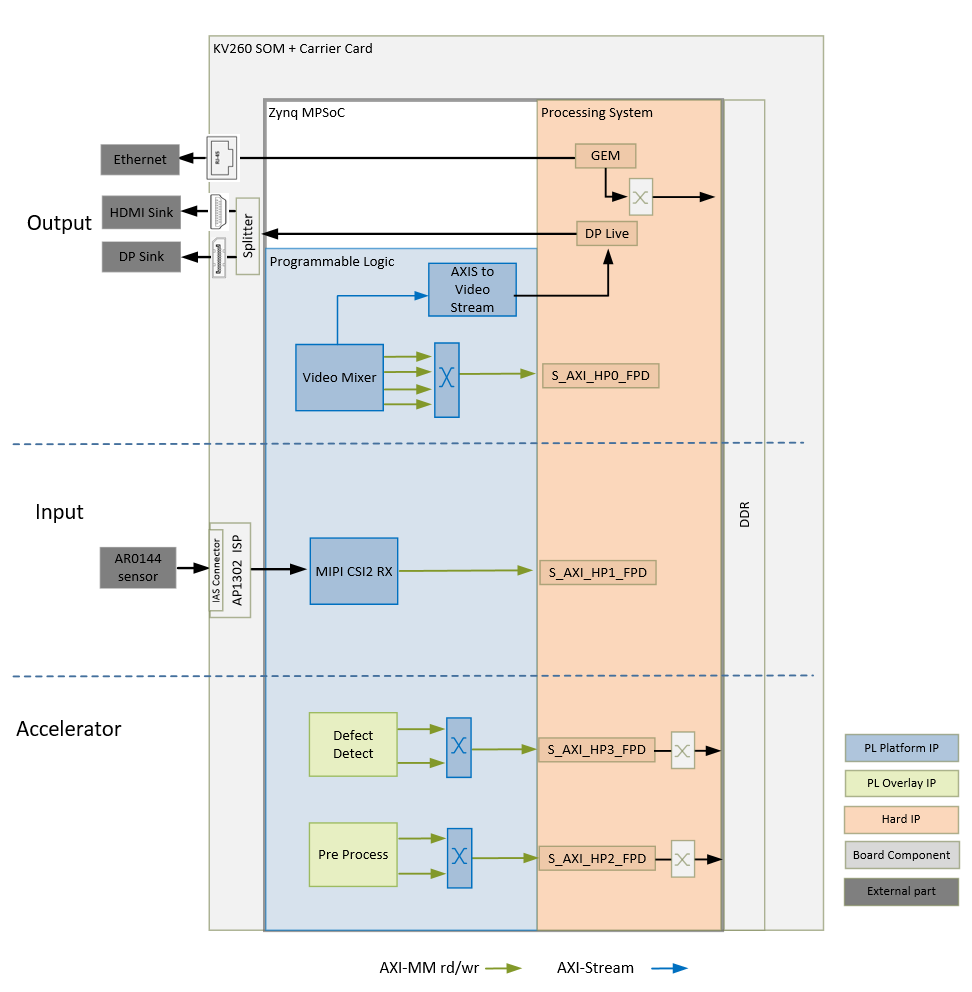
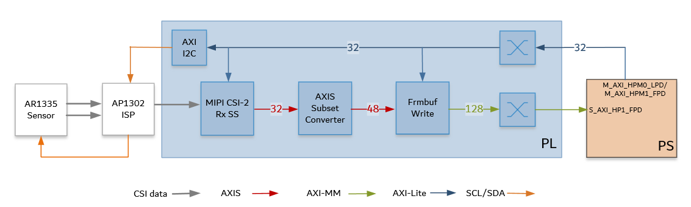
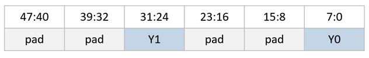
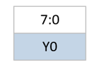
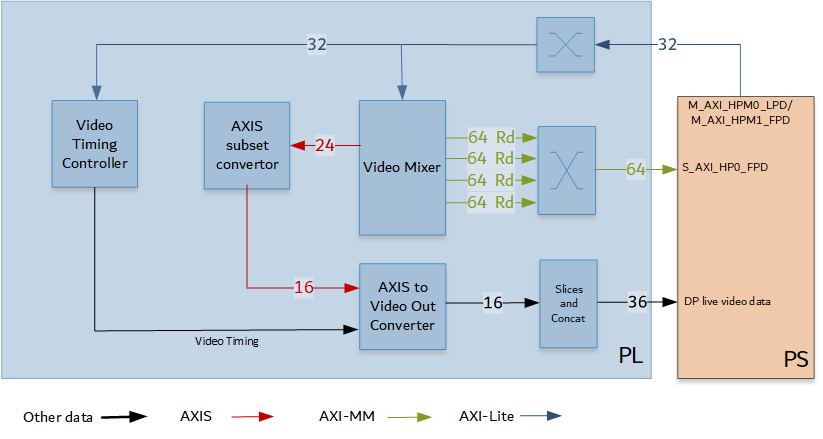

Kria™ KV260 Vision AI Starter Kit Defect Detection Tutorial |
Hardware Architecture of the Platform |
Hardware Architecture of the Platform¶
Introduction¶
This section describes the design implemented in Programmable Logic (PL). The following figure shows the top-level hardware architecture of the reference design.

At a high level, the design comprises of three pipelines:
Capture/Input pipeline: This comprises of pipelines through which video data is captured.
Capture images from a file source (PS)
MIPI CSI-2 capture pipeline (PL)
Display/Output pipeline: This comprises of pipelines through which video data is output.
DisplayPort pipeline (PL + PS)
Ethernet pipeline (PS)
Accelerator pipeline: This comprises of overlay accelerator functions integrated into the platform using Vitis.
The Pre-Process block modifies the input data as required by the Defect Detection function (PL).
The Defect Detection block identifies defects in a mango (PL + PS).
Both Pre-Process and Defect Detection use Vitis Vision Library functions.
Note: The PS interconnects in the figure are conceptual.
Capture¶
Single Sensor MIPI Capture¶
A capture pipeline receives video frames from an external source and writes it into memory. The single sensor MIPI CSI-2 receiver capture pipeline is shown in the following figure.

This pipeline consists of four components, of which two are controlled by the APU via an AXI-Lite based register interface; one is controlled by the APU via an I2C register interface, and one is configured statically.
The On Semi AR0144, which is a CMOS active pixel image sensor, sends sensor data to the ISP through a 2-lane MIPI interface. It is controlled and programmed by the ISP via a two-wire serial interface. The sensor is connected to the IAS 0 module connector on the ML carrier card. For more information refer to the datasheet from https://www.onsemi.com/products/sensors/image-sensors-processors/image-sensors/ar0144cs
The On Semi AP1302 ISP is an image signal processor digital image sensor supporting image resolutions up to 4224x 3156V. AP1302 interfaces to CMOS imaging sensors and performs all the necessary operations required to capture video streams. It performs functions such as Auto White Balancing (AWB), Auto Exposure (AE), Auto Focus (AF) etc. The ISP is controlled via an I2C interface using an AXI I2C controller in the PL. It is mounted on a ML carrier card and has a MIPI output interface that is connected to the MIPI CSI-2 RX subsystem inside the PL. A GPIO is used to reset the IP. For more information, refer to the datasheet from https://www.onsemi.com/products/sensors/image-sensors-processors/image-processors/ap1302
The MIPI CSI-2 receiver subsystem (CSI Rx) includes a MIPI D-PHY core that connects one data lane and one clock lane to the ISP. It implements a CSI-2 receive interface according to the MIPI CSI-2 standard v2.0 with underlying MIPI D-PHY standard v1.2. The subsystem captures images from the ISP in YUV 4:2:2 format and outputs AXI4-Stream video data. At two pixels per clock (ppc) and 8 bits per pixel, the AXIS width is 32 bits. For more information see the MIPI CSI-2 Receiver Subsystem Product Guide PG232.
The AXI subset converter, see AXI4-Stream Infrastructure IP Suite LogiCORE IP Product Guide [PG085](https://www.xilinx.com/support/documentation/ip_documentation/axis_infrastructure_ip_suite/v1_1/pg085-axi4stream-infrastructure, is a statically-configured IP core that converts the 32 bit AXI4-Stream input data to 48 bit AXI4-Stream output data by adding zeros to the MSB of each data word. At two ppc, the AXIS width is 48 bits. The format on the AXI4-Stream is as follows.

The video frame buffer takes Y8 AXI4-Stream input data and converts it to AXI4-MM format, which is written to memory. The Y stream is stored in memory as follows.

The AXI-MM interface is connected to the S_AXI port of the PS. For each video frame transfer, an interrupt is generated. A GPIO is used to reset the IP between resolution changes. For more information, see Video Frame Buffer Read and Video Frame Buffer Write LogiCORE IP Product Guide PG278.
All the IPs in this pipeline are configured to transport 2ppc @ 275 MHz, enabling 1280x800 @ 30fps resolution set on the sensor.
Display¶
An output pipeline reads video frames from memory and sends the frames to a sink. In this case, the sink is a display port in the PS. The display pipeline is shown in the following figure.

This PL pipeline consists of four components, two of which are controlled by the APU via an AXI Lite base register interface and the other two are statically configured.
The Video Mixer IP core is configured to support blending of up to four overlay layers into one single output video stream. The four layers are configured to be memory-mapped AXI4 interfaces connected to the PS via interconnects. The primary AXI-MM layer has the resolution set to match the display. The other layers, whatever their resolution, is blended with this layer. In this design, the overlay layers are configured to be Y8, while the AXI4-Stream output from the mixer is set to YUV 422 format. A GPIO is used to reset the subsystem between resolution changes. For more information, refer to Video Mixer LogiCORE IP Product Guide PG243.
The AXIS subset converter passes the LSBs to the Video Out converter and drops the MSB.
All video systems require management of video timing signals, which are used to synchronize processes. The Video Timing Controller (VTC) serves the function of both detecting and generating these timing signals. In this design, it generates timing control signals which are used by the AXI4-Stream to Video Out converter to produce native video output signals.For more information refer to Video Timing Controller Product Guide PG016.
AXI4-Stream to Video Out core provides a bridge between video processing cores with AXI4-Stream interfaces and native video output (parallel video data, video syncs, and blanks). The core works with the Xilinx Video Timing Controller (VTC) core. The synchronizer section of the core synchronizes timing from the VTC to the video data from the AXI4-Stream Bus. For more information, refer to AXI4-Stream to Video Out LogiCORE IP Product Guide PG044.
The output from the AXI4-Stream to Video Out Converter goes through SOM slices and concat blocks to drive the DisplayPort Live signals on the PS. The slices and concat are required to the adhere to the Live Video data format. For more information on DisplayPort Controller in Live mode, refer to the Zynq UltraScale+ Device Technical Reference Manual UG1085.
Clocks, Resets and Interrupts¶
Clocks¶
The following table identifies the main clocks of the PL design, their source, their clock frequency, and their function.
| Clock | Clock Source | Clock Frequency | Function |
|---|---|---|---|
| pl_clk0 | PS | 100 MHz | Clock source for clocking wizard (clk_wiz_0) generating clocks |
| clk_200M | Clocking wizard | 200 MHz | MIPI D-PHY core clock |
| clk_100M* | Clocking wizard | 100 MHz | AXI-Lite clock to configure the different video IPs in the design. |
| clk_275M* | Clocking wizard | 275 MHz | AXI MM clock and AXI Stream clock used in the capture pipeline, display pipeline, and processing pipeline |
| clk_50M | Clocking wizard | 50 MHz | PLL reference clock for the VCU IP |
| clk_550M* | Clocking wizard | 550 MHz | Generated to be used by the accelerator |
| clk_out1 | Clocking wizard | Variable | A clocking wizard with an AXI control interface is used in the display path. Based on the video resolution, the software can configure the required clock frequency through the AXI control interface. The output clock is used to drive the Video Timing Controller, AXI Stream to Native Video converter, and the DP Live clock port on the PS. |
*Clocks that are exposed as a Platform interface and can be used by an accelerator.
Resets¶
The following table summarizes the resets used in this design.
| Reset Source | Function |
|---|---|
| pl_resetn0 | PL reset for proc_sys_reset modules and the clock_wizard generating clocks for the video domain |
| rst_processor_100MHz | Synchronous resets for clk_out100M clock domain |
| rst_processor_275MHz | Synchronous resets for clk_out275M clock domain |
| rst_processor_550MHz | Synchronous resets for clk_out550M clock domain |
| pros_sys_reset_0 | Synchronous resets for clk_out1 clock domain |
| GPIOs | |
| emio_gpio_o[0] | Video Mixer Reset |
| emio_gpio_o[1] | Frame Buffer Write Reset |
| emio_gpio_o[2] | AP1302 ISP Reset |
| ____ |
Interrupts¶
The following table lists the PL-to-PS interrupts used in this design.
| Interrupt ID | Instance |
|---|---|
| pl_ps_irq1[0] | Video Mixer IP |
| pl_ps_irq1[1] | Video Timing Controller IP |
| pl_ps_irq1[2] | AXI I2C IP |
| pl_ps_irq1[3] | MIPI CSI RX Subsystem IP |
| pl_ps_irq1[5] | Frame Buffer Write IP |
| pl_ps_irq0 | Exposed as a Platform interface and can be used by an Accelerator |
Resource Utilization¶
The following table reports the resource utilization numbers on this platform post implementation.
| Resource | Utilization | Available | Utilization % |
|---|---|---|---|
| LUT | 20912 | 117120 | 17.86 |
| LUTRAM | 1734 | 57600 | 3.01 |
| FF | 30371 | 234240 | 12.97 |
| BRAM | 18 | 144 | 12.50 |
| URAM | 1 | 64 | 1.56 |
| DSP | 30 | 1248 | 2.40 |
| IO | 9 | 186 | 4.84 |
| BUFG | 10 | 352 | 2.84 |
| MMCM | 2 | 4 | 50.00 |
| PLL | 1 | 8 | 12.50 |
Next Steps¶

License¶
Licensed under the Apache License, Version 2.0 (the “License”); you may not use this file except in compliance with the License.
You may obtain a copy of the License at http://www.apache.org/licenses/LICENSE-2.0
Unless required by applicable law or agreed to in writing, software distributed under the License is distributed on an “AS IS” BASIS, WITHOUT WARRANTIES OR CONDITIONS OF ANY KIND, either express or implied. See the License for the specific language governing permissions and limitations under the License.
Copyright© 2021 Xilinx